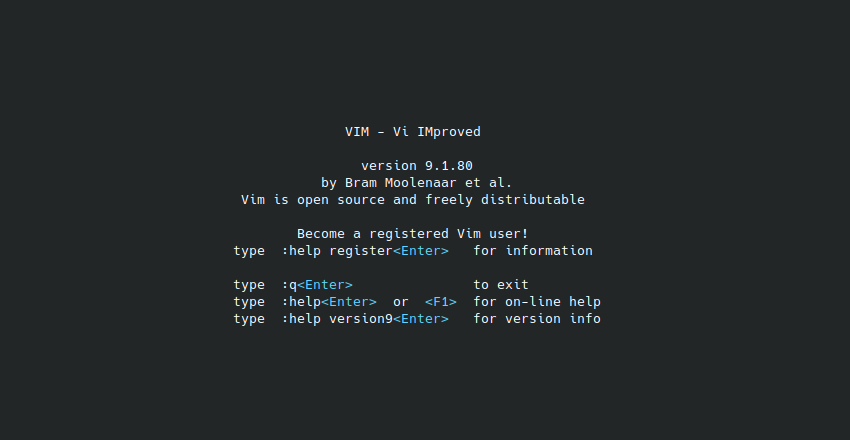

What is Vim?
Vim, short for "Vi IMproved," stands as a testament to the enduring legacy of the Vi text editor, which originated in the early days of Unix computing. Vim, developed by Bram Moolenaar in the early 1990s, emerged as a robust and highly customizable text editor renowned for its efficiency and versatility. Rooted in the modal editing concept pioneered by Vi, Vim offers a distinctive mode-based interface, empowering users with a plethora of commands and features for text manipulation, code editing, and more. From its humble beginnings as an enhancement to the Vi editor, Vim has evolved into a cornerstone tool for developers, sysadmins, and enthusiasts alike, shaping the landscape of text editing with its powerful capabilities and enduring appeal.
